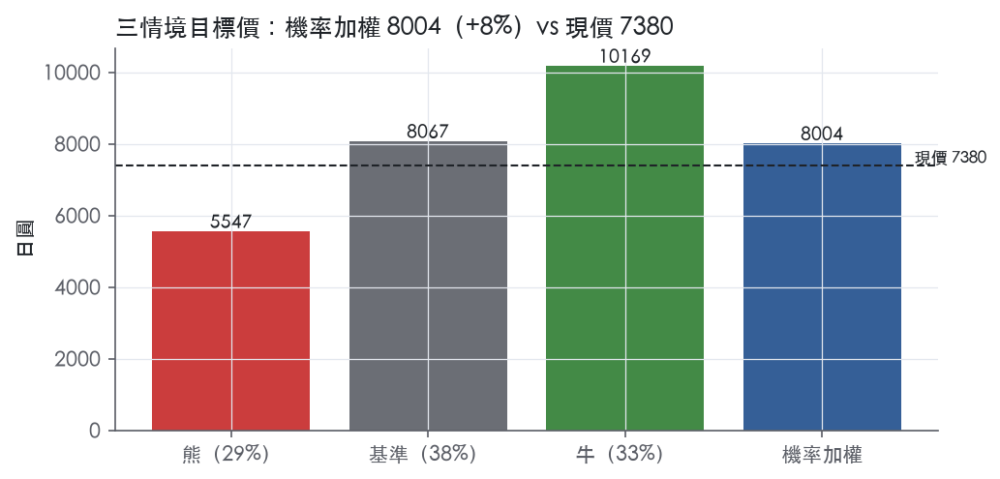
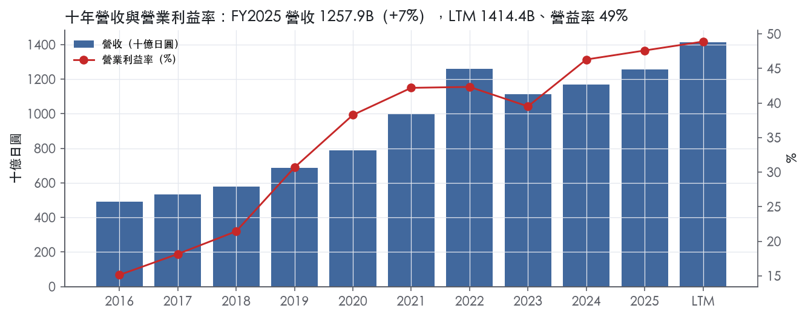
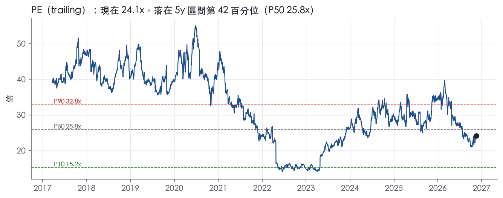
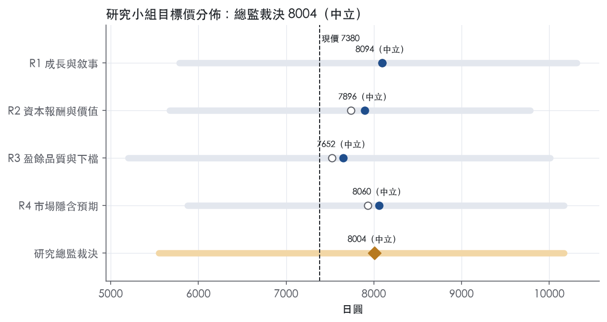
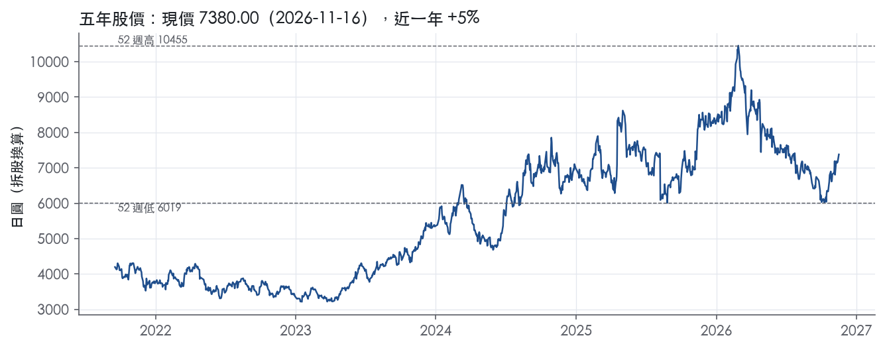

評等總表 › 未分類 › 4519.T
盈餘複利加小幅重估，中性｜評等 中立｜目標價 8004
| 報告日 | 評等 | 目標價 | 當時股價 | 超額報酬 |
|---|---|---|---|---|
| 2026-11-16 | 中立 | 8,004 | 7,380 | +3.5% |
| 評等 | 中立（邊界，鄰近加碼） |
| 12 個月目標價 | 8004 日圓 |
| 現價 | 7380.00 日圓（2026-11-16） |
| 預期報酬 | 股價 +8.5%＋股息 2.9%＝總報酬 +11.3%；日股門檻 7.8%，超額 +3.5% |
| 估值方法 | P/E 22.5x，套在第 5–8 季的EPS（也就是一年後的未來四季） |
| 三情境 | 熊 5547／基準 8067／牛 10169 |
| 研究流程 | 四位研究員兩輪辯論＋研究總監裁決 |
| 資料來源 | EDINET、TDnet、J-Quants、Yahoo、FRED（全免費） |
盈餘複利加小幅重估，中性（研究總監裁決，四位研究員兩輪辯論後）
評等 中立（邊界，鄰近加碼）｜12 個月目標價 8004 日圓（總監三情境機率加權 8030 與研究員中位數 7978 各半）｜現價 7380.00（2026-11-16）
預期報酬：股價 +8.5%＋股息 2.9%＝總報酬 +11.3%。日股門檻 7.8%，超額 +3.5%，離加碼的分界不到三個百分點，屬邊界評等（落在其他級距的機率約四成）。
估值方法：P/E 22.5x，套在第 5–8 季的EPS（也就是一年後的未來四季）。三情境：熊 5547（29%）／基準 8067（38%）／牛 10169（33%）。
什麼會讓研究總監改變看法：若 2027 年 2 月的 FY2027 期初計畫売上収益年增低於 5%，或任一半期その他の売上収益年減並歸因美國定價／關稅，轉偏空；若補足資料顯示經常性權利金主導其他売上収益增長且 FY2027 計畫 Core 營業利益成長逾 10%，上調營益率與倍數、轉偏多。
| 過去四季（實際，FY2026Q3） | 未來四季 | 第 5–8 季 | 第 9–12 季 | |
|---|---|---|---|---|
| 營收（B） | 1,414.4B | 1,555.8B | 1,695.8B | 1,797.6B |
| 營收成長 | 16.5% | 10.0% | 9.0% | 6.0% |
| 營業利益率 | 48.9% | 48.5% | 49.0% | 49.0% |
| EPS（日圓） | 306.09 | 325.56 | 358.55 | 380.11 |
| EPS 成長 | 26.8% | 6.4% | 10.1% | 6.0% |
| 每股股息（日圓） | — | 0.00 | 0.00 | 0.00 |
| P/E（現價） | 24.1x | 22.7x | 20.6x | 19.4x |
| 股息殖利率（現價） | 2.9% | — | — | — |
過去四季為申報數字；預測為研究總監的假設、程式計算。倍數與殖利率都用現價計算，用來看現價對應各期獲利的高低。
| 情境 | 機率（歷史） | 故事 | 未來四季營收成長 | 第 5–8 季營益率 | 倍數 | 目標價 | 股價漲跌 |
|---|---|---|---|---|---|---|---|
| 熊 | 29%（28%） | 風險表第 3 條回吐大於預期、第 1 條藥價改定與生物相似藥振興、第 2 條美國藥價／關稅壓縮 Hemlibra 與 NEMLUVIO 權利金，零成本營收受壓使利潤率重傷，倍數落前瞻帶 P25 | 6.0% | 45.0% | 18.5x | 5547 | -24.8% |
| 基準 | 38%（39%） | ERP 回吐後高個位數成長、營益率持平 LTM，報酬靠盈餘複利、股息與小幅重估 | 10.0% | 49.0% | 22.5x | 8067 | 9.3% |
| 牛 | 33%（33%） | 經常性權利金主導其他売上収益增長、2026 年送件案 2027 年核准放量，營益率過 50%，倍數到前瞻帶 P75 | 10.0% | 51.5% | 25.8x | 10169 | 37.8% |
目標價由程式依研究總監的驅動與倍數計算；機率由研究總監給定。括號內是歷史頻率：把這檔股票過去十年 12 個月報酬的波動形狀，置中在基準情境，結果落在各情境附近的比例。

四位研究員用不同方法各自估值，回應研究總監的質疑後交出第二輪，最後由總監逐點裁決。各研究員的主張見第七章，裁決理由見第八章，完整論證見《研究底稿》。
| 立場（一輪→二輪） | 加權目標價（一輪→二輪） | 評等（一輪→二輪） | 第二輪倍數 | 熊～牛目標價 | |
|---|---|---|---|---|---|
| R1 成長與敘事 | 中性→中性 | 8094→8094 | 中立→中立 | 25.0x | 5784～10314 |
| R2 資本報酬與價值 | 中性→中性 | 7738→7896 | 中立→中立 | 22.5x | 5672～9784 |
| R3 盈餘品質與下檔 | 中性→中性 | 7521→7652 | 中立→中立 | 21.5x | 5200～10008 |
| R4 市場隱含預期 | 中性→中性 | 7932→8060 | 中立→中立 | 21.5x | 5874～10169 |
| 研究總監裁決 | 中性 | 8004 | 中立 | 22.5x | 5547～10169 |
目標價由程式依各自的驅動與倍數計算；評等＝機率加權總報酬 − 日股門檻。
中外製藥是日本處方藥廠商，與瑞士羅氏（Roche Holding Ltd）維持戰略聯盟，羅氏為持股61.12%的母公司。公司只有一個報告部門——醫藥品事業，由當社與15家子公司及2家母公司子公司組成企業集團。公司使命是「透過提供創新醫藥品與服務創造新價值，貢獻於世界醫療與人們的健康」，目標是成為「以患者為中心、實現高度且可持續醫療的醫療保健產業頂尖創新者」。賣給誰很直接：國內透過全國特約藥商銷售自製醫藥品給醫療體系；海外則一部分產品由羅氏進口銷售，一部分由中外自家歐洲、台灣、中國子公司直接銷售。商業模式本質是「日本市場自主銷售＋全球開發借力羅氏平台」的雙軌結構，LTM 營收 1,414.38B，市值 12,144.20B，是日本市值最大的藥廠之一。
財報上中外製藥不拆產品分部，只揭露「國內製商品銷售」與「海外製商品銷售」兩塊地理營收，以及「其他銷售收益」（授權金、一次性收入等）。2026年前三季（1–9月累計）製商品銷售906.8B円（年增14.1%），其中國內406.3B円（年增18.2%）、海外500.5B円（年增11.0%）；其他銷售收益161.3B円（年增37.7%），主要來自血友病藥 Hemlibra、NEMLUVIO 的權利金收入增加及一次性收入增加。國內製商品銷售進一步分兩個治療領域：腫瘤領域204.8B円（年增13.3%）、特殊疾病（Specialty）領域201.5B円（年增23.6%）。腫瘤領域成長靠新藥Lunsumio市場滲透與主力藥Polivy暢銷，但抗VEGF藥Avastin因藥價調整與學名藥滲透而銷售下滑；特殊疾病領域則由主力藥Hemlibra、Vabysmo、Enspryng穩健成長，加上2026年2月上市的病毒載體產品Elevidys快速滲透市場帶動。海外銷售主要是授權給高德美（Galderma）的NEMLUVIO出口大幅增加，以及銷往羅氏的Alecensa出口增加。公司按Core基準（排除無形資產攤銷與重組費用等非經常項目）管理損益，Core與IFRS口徑的差異在FY2026前三季為無形資產攤銷1.9B円、事業重組費用等11.6B円。研發投入是公司的另一個「隱性分部」：FY2025全年度Core基準研發費用180.1B円（年增1.8%），佔營收比率14.3%；FY2026前三季Core研發費用141.2B円（年增9.6%），佔營收比率13.2%。資料包年度毛利率FY2025為71.1%、營益率47.6%，顯示這是一家高毛利的特化型生物藥公司，10-K式分部收入占比未按產品逐一揭露，只到治療領域粒度。
公司的終端客戶是日本及海外的醫療體系與患者，通路則依地區分工：國內由全國特約藥商批發銷售中外自產醫藥品，部分原料向羅氏採購，部分製造委託中外製藥工業及Genentech。歐洲方面，中外歐洲(Chugai Pharma Europe)擔任統籌銷售公司，羅氏進口一部分中外產品在歐洲銷售，英國、法國、德國則各由當地子公司負責銷售與法規事務。台灣由台灣中外製藥股份有限公司直接銷售；中國由日健中外製藥銷售並提供學術情報，生產則由泰州日健中外製藥工業負責。海外研發與申請據點分布在美國、英國、中國、台灣，新加坡子公司則負責藥物研究，另有美國與百慕達的創投基金進行新創投資。股權結構上羅氏持股61.10%，是壓倒性大股東，其次是日本Master Trust信託銀行（信託口）8.62%、日本Custody銀行（信託口）3.53%；這代表公司決策高度綁定羅氏的全球藥品組合布局，日本國內市場則是中外自主經營的現金牛。公司持有的政策保有股（交叉持股）僅限非上市股票16檔、帳列364M円，且無上市股票的政策保有，顯示交叉持股規模很小、不是東證資本效率改革要處理的重點標的。
FY2025Q4（2025年10–12月）營收346.30B円、年增14.6%，營益率48.8%【判，取自資料包】。FY2026Q1（2026年1–3月）營收321.75B円、年增11.5%，營益率49.3%【判，取自資料包】。FY2026Q2（2026年4–6月）營收341.58B円、年增17.8%，營益率47.1%【判，取自資料包】。FY2026Q3（2026年7–9月）營收404.74B円、年增21.5%，毛利率70.6%、營益率50.1%，淨利143.55B円【判，取自資料包】。公司自己揭露的三季累計（1–9月）數字更細：Core基準營收1,068.1B円（年增17.2%），Core營業利益536.1B円（年增19.0%），Core四半期利益384.7B円（年增20.2%）；IFRS基準營業利益522.6B円（年增21.6%），IFRS四半期利益375.3B円（年增22.8%）。公司特別說明，國內事業所正為新一代核心業務系統（ERP）上線做遷移準備，將第三季（7–9月）對醫藥品批發商的出貨時期提前，推高了當季國內製商品銷售——這代表FY2026Q3的高成長有一部分是出貨時點前置、非完全是需求驅動。費用端，製商品原價率因產品結構變化上升1.6個百分點至34.7%，研發費用141.2B円（年增9.6%），銷管費用76.9B円（年增10.8%，主因法人事業稅外形標準課稅及一次性費用增加）。資產負債表上，淨營業資產（NOA）較上年度末增加93.3B円至1,203.6B円，主因長期淨營業資產因浮間事業所新研究棟（UKX）與生物原料製造棟（UK3）投資增加32.9B円；淨現金較上年度末減少110.7B円至869.0B円，主因支付股利350.5B円。自由現金流（FCF）三季累計246.1B円（年增35.8%），營業FCF 427.7B円（年增14.6%）。公司在10月27日的決算短信中明確表示：「連結業績予想沒有自2026年1月29日公布以來做修正」——也就是本季財報雖營收與獲利皆加速成長，公司仍未調升全年財測，暗示管理層對出貨提前效應及下半年藥價調整風險保持謹慎。
公司明確提出2030成長戰略「TOP I 2030」，兩大支柱是「實現世界最高水準的創藥力」與「建構先進事業模式」，具體目標是十年內把研發產出倍增、每年推出一個自主開發的全球新藥。公司把成長引擎拆成「五項改革」：創藥改革（從既有小分子／抗體技術延伸至中分子等新模態，並透過美國創投基金尋找外部標的）、開發改革（運用臨床開發力與人體預測力做早期Go/No-Go判斷、同時多適應症並行開發）、製藥改革（強化中分子等難度極高化合物的原料藥與製造技術，建構雙廠區供應體系）、Value Delivery改革（結合實體、遠端、數位的多通路顧客互動模式，並考慮將成熟藥品轉讓第三方以聚焦成長領域）、以及支撐以上四項的成長基盤改革（人才組織、數位、永續環境、品質、PHC解決方案）。公司也強調過去已有6個品項、9個項目取得美國FDA「突破性治療藥（Breakthrough Therapy）」認定，包括Actemra、Alecensa、Hemlibra、Enspryng、Nemolizumab等，作為創藥力的證明。管理指標上，公司重視長期投資效率指標Core ROIC，並以ROE衡量股東資本回報，兩者並重以追求事業價值與股東價值最大化。
從我的角度看，中外製藥的成長故事其實是「羅氏全球平台借力＋自主創藥」的組合套利模式：日本市場靠羅氏引進的藥品與自家主力藥維持穩定現金流，海外成長則靠NEMLUVIO授權金與Alecensa出口這類「輕資產、高毛利」的授權收入放大。FY2026Q3營收與利潤率雙雙加速，但管理層自己點出ERP換代造成的出貨前置效應，加上全年財測未上修，意味著市場不該把單季21.5%的營收年增率線性外推到全年。長線風險在於日本藥價每兩年下修、學名藥滲透持續侵蝕Avastin等老藥，能否靠Elevidys、Lunsumio、NEMLUVIO等新產品及授權金成長抵銷，是股價能否維持P/E 24.1x（現金充沛、ROIC約29%水準）估值的關鍵。

中外製藥是寬護城河：自有抗體工程平台持續產出新分子，加上羅氏戰略聯盟的雙向授權，讓我們有把握未來 10 年以上 ROIC 仍高於資本成本。趨勢判為穩定而非變寬，因為近年利潤率擴張有相當部分來自少數產品的權利金，產品集中度上升抵銷了規模擴大的好處。
無形資產（專利與創藥技術）是主要來源。公司表示已有 6 品目／9 項目的自家創製藥（Actemra、Alecensa、Hemlibra、Enspryng、Nemolizumab 等）獲美國 FDA 指定為「突破性治療藥」。管線中反覆出現自有抗體平台，包括 pH 依存性結合抗體 SA237/RG6168 與 SKY59/RG6107、回收型抗體 RAY121、清除型抗體 GYM329/RG6237，以及雙特異性抗體 ACE910/RG6013。中外的優勢在於能重複產出新分子的平台，而不是單一專利，這是我們給寬、不給窄的核心理由。其他銷售收益的成長主要來自 Hemlibra 與 NEMLUVIO 權利金收入增加，顯示這些技術不需要中外自建全球商業化體系也能變現。
無形資產（授權：羅氏聯盟）是第二支柱。公司表示，以羅氏充實的管線確保日本市場的穩定收益基盤，同時在自家創製品的後期開發與銷售上運用羅氏的全球平台。日本同業要取得同等規模的外部引進管線，必須逐案競價；中外則透過聯盟架構常態取得，屬於結構性優勢，而非一次性交易。
成本優勢（研發生產力）是第三項。公司把這套分工稱為「實現高生產性的商業模式」，可將資源集中於自主創藥。FY2025 研發費用佔營收比率為 14.3%，同年營益率仍達 47.6%，反映公司不必自建全球後期開發與銷售網路的成本結構。
轉換成本、網路效應、效率規模三類在材料中沒有直接證據，因此不列入。
看得到：ROIC 長期顯著高於資本成本，但「利潤率穩定」這項條件只部分成立。ROIC 十年平均 30.7%、標準差 3.7%、最低 25.3%；有資料的 7 年全部高於資本成本代理值 10.1%，平均超額 20.6%。FY2023 營收年增 -11.8%，當年 ROIC 仍維持 27.2%，下行年度的韌性得到驗證。資本成本代理值以美國 10 年債為基礎，而日本 10 年公債為 2.841；若以日圓計算，資本成本應更低，因此上述超額報酬屬保守估計。
數字與主張的衝突有兩處：營業利益率標準差 11.4%、區間 15.1% 至 47.6%，不符合寬護城河「利潤率穩定」的典型特徵。不過這是單向擴張，不是循環波動：最低值出現在 FY2016，最高值就是最新一年；毛利率也從 54.7% 一路升至 71.1%。第二處是 ROIC 只有 7 年資料，不足以完整檢驗「10 年」的評級期限，這是本評級最主要的不確定處。我們維持寬評級，下修訊號設定為 ROIC 跌破歷史最低值 25.3%，而不是利潤率本身的波動。
最大的侵蝕風險是對羅氏的依賴：聯盟既是護城河，也是單點失效的來源。羅氏持股 61.10%，聯盟條件與全球權利分配由母公司主導；在母子上市結構下，少數股東無法否決條款修改。第二是藥價壓力：公司指出各國抑制醫療費的政策愈趨嚴格，「只有真正有價值的解決方案才會被選擇」的 VBHC 潮流正在加速。Avastin 已因藥價調整與學名藥滲透而銷售下滑，這是專利到期後會發生什麼的前例。
第三是管線產出率：2025 年 RG6058 的四項第Ⅲ相試驗對應適應症全部中止，LUNA18、STA551、SOF10、SAIL66、AMY109 也決定停止自主開發。若「自家全球品每年上市」的目標落空，現有權利金產品到期後，平台價值將受到質疑。第四是集中度：權利金與出口收入集中在 Hemlibra、NEMLUVIO、Alecensa 等少數品項。
目標倍數應相對日本藥廠同業溢價，理由有三：ROIC 超額報酬寬、資產負債表為淨現金、成長由自有平台驅動。但溢價不宜推回自身歷史高檔：現行 P/E 24.1x，低於 5 年中位數 25.8x與 10 年中位數 32.6x。我們建議以 5 年中位數附近作為倍數上限，直到權利金集中度下降、管線重新證明產出能力為止。
| 指標 | 最新 | 十年平均 | 標準差 | 最低 | 最高 |
|---|---|---|---|---|---|
| ROIC | 29.4% | 30.7% | 3.7% | 25.3% | 36.1% |
| 毛利率 | 71.1% | 64.3% | 5.1% | 54.7% | 71.1% |
| 營業利益率 | 47.6% | 34.2% | 11.4% | 15.1% | 47.6% |
| FCF 利潤率 | 21.8% | 20.8% | 7.9% | 7.1% | 33.6% |
| ROE | 22.1% | 23.6% | 3.2% | 19.6% | 28.7% |
程式計算。資本成本代理值（10 年債＋5%）：10.1%；ROIC 平均減資本成本：20.6%；ROIC 有資料的 7 年中，高於資本成本 7 年。
LTM 營業現金流／淨利 0.86x、FCF／淨利 0.71x，兩者均低於近三年平均（1.10x、0.89x）與十年平均（1.06x、0.73x），對應計分表燈號為黃。公司本業成長快、研發與營運資本投入同步擴大，加上日本計畫中的 ERP 系統切換造成出貨前倒，使 Q3 單季現金轉換失真，屬於可解釋的短期落差，而非盈餘造假或收入認列問題。淨負債為負（即淨現金），利息保障倍數極高（LTM 10,322.0x），槓桿完全不構成估值限制。
LTM 現金轉換弱於十年平均，但主因是營運資本擴張與資本支出上升，不是盈餘品質惡化。FY2026 第三季決算短信顯示，當第３四半期累計營業活動現金創出556.5B 日圓（556,533M），扣除運轉資本減少49.6B 日圓及稅金支付176.2B 日圓後，營業活動現金流為306.3B 日圓（306,325M），較去年同期257.2B 日圓（257,173M）成長，顯示現金流本身是成長的，只是成長速度不如 Core 淨利。有報 FY2025 也指出，純運轉資本因營業債權及未收入金增加而上升783 億円（即78.3B 日圓），是現金落後淨利的主要原因。應計比率 LTM 為 2.8%，仍遠低於紅線 5.0%，近三年平均甚至是負的 -1.8%，顯示長期而言盈餘並非靠應計堆出來，LTM 偏高只是單季波動。
公司自己揭露的 Q3 累計財報現金流結構也支持這個判斷：調整後營業利益552.3B 日圓（5,523億円）高於 IFRS 營業利益522.6B 日圓，顯示非現金費用（折舊攤銷等）被加回後現金創造能力其實更強，但隨後因有形固定資產取得56.7B 日圓（56,684M）及純運轉資本增加49.6B 日圓侵蝕了營業FCF（427.7B 日圓）。這是擴產期的正常現象，不是盈餘品質紅旗。
公司長期使用「Core實績」做為內部管理與股東回饋的主要指標，與 IFRS 實績之間的差距需要逐項檢視。FY2025 全年差距：IFRS 當期利益434.0B 日圓低於 Core 當期利益451.0B 日圓，兩者差異來自無形資產攤銷費1.4B 日圓、無形資產減損損失1.7B 日圓、事業再構築費用13.3B 日圓、經營判斷之自社開發一括中止費用等16.4B 日圓，以及含固定資產出售利益的事業所再編費用8.4B 日圓（收益項，減少差距）。FY2026 第三季累計差距明顯縮小：僅無形資產攤銷費1.9B 日圓與事業再構築費用等11.6B 日圓。
逐項判斷：無形資產攤銷費屬於真實的過去併購或授權取得成本的分攤，雖是非現金但代表已付出的對價，估值時不應完全加回。事業再構構費用與自社開發一括中止費用（對應決算短信揭露的多個早期管線中止，包括 HTT mRNA、GYM329 多項適應症等）屬於研發組合優化的一次性沖銷，性質偏一次性，可以在估值時部分剔除，但如果公司持續每年都有類似中止費用，則代表這其實是研發投入失敗率的常態成本，不宜無限期剔除。事業所再編費用含資產出售利得，屬於非經常項目，剔除合理。整體而言，Core 指標的調整項目均有清楚揭露且金額不大（占 Core 淨利個位數百分比），調整幅度可信。
公司處於淨現金狀態，FY2026Q3 淨負債為 -382.31B 日圓，長期沒有槓桿風險。有報揭露 FY2025 期末淨現金（含有價證券及有利子負債）為979.7B 日圓（9,797億円），較前期末減少16.6B 日圓（166億円）；到 FY2026Q3 進一步降至869.0B 日圓（8,690億円），主因配當金支付350.5B 日圓（3,505億円）與投資活動。資本配置方面，股利加回購／淨利 LTM 為 88.8%，近三年平均47.9%，十年平均41.2%，顯示近期股東回饋比例明顯墊高，但公司政策是以 Core EPS 平均45% 配當性向為目標，LTM 88.8% 偏高主因FY2025 單年 Core 配当性向已達99.3%（決算短信摘要列示），屬於單年股利跳升而非常態，不構成舉債回饋的紅旗，因公司現金仍為淨現金狀態。稀釋股數年變動為 -0.0%，沒有稀釋風險，SBC 占營收因資料缺失無法評估（—），但從 10 年營益率持續上升（FY2016 15.1% 到 FY2025 47.6%，資料包年度表）可反推股權激勵並未對毛利/營益率造成侵蝕性稀釋。
整體來看，計分表沒有任何真正的紅燈，三個黃燈都可用業務擴張與會計時點（ERP 切換、資本支出週期、運轉資本變動）完整解釋，屬於可控的短期雜訊。
估值應以 IFRS GAAP 數字為基礎，Core 調整項目金額小且揭露透明，可以參考 Core EPS 做趨勢分析，但不建議完全用 Core 數字取代 GAAP 做倍數估值，因為研發管線中止費用雖一次性，但發生頻率不低，代表研發失敗率是這個商業模式的常態成本。盈餘不需要大幅打折，現金轉換黃燈主因是成長期資本支出與運轉資本擴張，而非應計堆砌或作帳。槓桿完全不是限制因素——公司淨現金近870B 日圓，利息保障倍數上萬倍，不影響可承受的估值倍數區間，目前 trailing P/E 24.1x 位於五年分位41.8%，尚屬合理範圍。
| 項目 | LTM | 近三年 | 十年 | 燈號 | 規則 |
|---|---|---|---|---|---|
| 營業現金流／淨利 | 0.86x | 1.10x | 1.06x | 黃 | ≥1.00x 綠、<0.80x 紅 |
| 自由現金流／淨利 | 0.71x | 0.89x | 0.73x | 黃 | ≥0.90x 綠、<0.60x 紅 |
| 應計比率（(淨利−CFO)／平均總資產） | 2.8% | -1.8% | -0.8% | 黃 | ≤0.0% 綠、>5.0% 紅 |
| SBC／營收 | — | — | — | — | ≤3.0% 綠、>8.0% 紅 |
| 淨負債／EBITDA | — | — | — | — | ≤1.50x 綠、>3.00x 紅 |
| 利息保障倍數（營業利益／利息） | 10322.0x | 42519.7x | 22062.4x | 綠 | ≥8.00x 綠、<3.00x 紅 |
| 稀釋股數年變動 | -0.0% | 0.0% | 0.0% | 綠 | ≤0.0% 綠、>3.0% 紅 |
| （股利＋回購）／淨利 | 88.8% | 47.9% | 41.2% | 綠 | ≥50.0% 綠、<0.0% 紅 |
程式計算；燈號以 LTM（無則近三年平均）判定。
| 風險 | 觸發指標（看什麼數字、在哪裡看） | 對 EPS 的影響方向與粗略幅度 | 未來 12 個月發生機率（高／中／低） | 出處 |
|---|---|---|---|---|
| 日本薬價制度每年下修＋後發品（學名藥）滲透 | 決算短信「國內製商品売上高」中Avastin銷售額、每年薬價改定公告（通常4月）、國內腫瘤領域年增率 | 負向，中～大：FY2026Q3腫瘤領域因薬價改定及後發品浸透已致Avastin下滑 | 高 | |
| 羅氏戰略聯盟條件變更或羅氏自身管線不振 | 羅氏持股比例公告、羅氏全球管線進度、對羅氏出口／授權金（其他売上収益）年增率 | 負向，大：羅氏持股61.12%，為日本唯一醫藥品事業公司及海外羅氏優先選擇權；其他売上收益161.3B円已佔三季營收約15%且年增37.7% | 中 | |
| ERP換代出貨前置效應消退，Q4／FY2027營收成長率回落 | 公司下一季決算短信是否再提ERP前置出貨、國內製商品売上高環比季變化 | 負向，中：FY2026Q3國內製商品売上因出貨前倒至當季而增加，意味需求並非全部真實 | 高 | |
| 新藥研發失敗或管線中止（中分子技術、重點適應症開發） | 決算短信「研究開発活動」段落列出的開發中止公告（如HTT mRNA、GYM329多項適應症中止）、FDA/EMA申請核准結果 | 負向，中：FY2026前三季已有多個適應症因試驗結果或羅氏策略判斷中止開發（HTT mRNA、GYM329脊髄性筋萎縮症等） | 中 | |
| 製品品質／副作用重大事件導致停售回收 | 公司公告的產品回收、安全性警示、FDA/PMDA安全性通知 | 負向，大但機率低：一旦發生「業績に重大な影響を及ぼす恐れ」 | 低 |
日本薬價制度每年下修＋學名藥滲透是最確定會持續發生的風險，因為制度本身就是每年改定。公司自己在風險章明說「毎年薬価改定が実施される中、薬価引き下げ政策やバイオシミラー等の振興政策が拡大すると、これまで以上に収益の低下等を招き」。最新一季已經看到實際衝擊：Avastin因薬價改定及後發品浸透銷售下滑。這不是假設性風險，是每年固定發生、只是幅度不確定。監測方法很簡單：每年4月薬價改定公告後，對比下一季國內老藥（Avastin、Actemra等成熟品）的銷售年增率。
羅氏聯盟依賴排第二，因為羅氏持股61.12%且中外是「日本市場羅氏唯一醫藥品事業會社」。公司風險章直接寫「ロシュの創薬・グローバルネットワークが不調に陥り、ロシュからの導入品による安定的な収益源が低下するリスク」。這點之所以排前面，是因為「其他売上収益」（主要是羅氏相關授權金，如Hemlibra、NEMLUVIO）已經成長到161.3B円、年增37.7%，佔三季營收超過15%，一旦羅氏端出狀況（例如HTT mRNA因羅氏判斷中止開發的案例已發生一次），直接衝擊這塊高毛利收入。監測指標是每季「その他の売上収益」年增率是否急速下滑，以及羅氏公告的重大管線變動。
ERP出貨前置是最短期、最確定會「均值回歸」的風險。公司自己在短信裡明白承認：「医薬品卸売企業向けの出荷時期について当第３四半期内への前倒しを実施しており、国内製商品売上高が増加しました」。這代表FY2026Q3的21.5%營收年增有一部分是「提前出貨」，不是真實終端需求，Q4或FY2027初季很可能看到國內銷售成長率明顯回落甚至負值。監測方法：下次決算短信是否還提ERP遷移、國內製商品売上高的季環比是否出現異常回落。
研發管線失敗屬於生技藥廠的結構性風險，本季財報本身就列出多筆中止：GYM329在脊髓性筋萎縮症、顔面肩甲上腕型筋ジストロフィー、肥満症三個適應症全部中止，HTT mRNA因羅氏判斷中止開發（ハンチントン病），テセントリク肝細胞がん二次治療也中止。單一個案影響有限，但密度顯示公司管線淘汰率不低。監測指標是每季決算短信「研究開発活動の状況」段落列出的「開発を中止」字樣數量，以及對比新適應症獲批數量。
品質／副作用事件機率最低但衝擊最大，公司風險章用「業績に重大な影響を及ぼす恐れがあります」強調，屬於尾部風險，列入清單是因為一旦發生會直接觸發停售、回收、訴訟，是五條裡唯一可能瞬間摧毀單一品項營收的風險。
現價 7380.00 對應 trailing（過去四季）P/E 24.1x、EV/EBITDA —、EV/EBITA —、EV/Sales 8.3x、FCF 殖利率 2.9%。主要估值倍數 P/E 現在 24.1x，落在5 年區間第 42 百分位（P10／P50／P90 = 15.2x／25.8x／32.8x）。

把程式的機械基準預測放到現價下，市場付的前瞻倍數是：P/E（未來四季） 21.4x、P/E（第 5–8 季） 19.5x。反推 DCF 顯示市價隱含未來五年營收年成長 11.5%（WACC 9.0%、終值成長 3.0%、FCF 利潤率 30.0%，SBC 不加回）。
| 倍數 | 現在 | 5 年 P10 | 5 年 P50 | 5 年 P90 | 現在分位 | 全期 P50 |
|---|---|---|---|---|---|---|
| P/E | 24.1x | 15.2x | 25.8x | 32.8x | 41.8% | 32.6x |
| EV/EBITA | 18.4x | 10.2x | 18.0x | 22.4x | 55.0% | 19.3x |
| EV/EBIT | 17.0x | 10.3x | 17.8x | 23.0x | 43.9% | 20.3x |
| EV/Sales | 8.3x | 4.7x | 7.5x | 10.6x | 58.6% | 8.1x |
| P/S | 8.6x | 4.9x | 7.8x | 11.1x | 58.0% | 7.5x |
| P/FCF | 33.9x | 19.0x | 32.5x | 46.1x | 56.6% | 37.0x |
trailing 倍數（股價 ÷ 過去四季）；分位以每個交易日計算。
（日股同業籃尚未建置：評等門檻用日股絕對門檻＝日本 10 年公債＋股權風險溢酬 5%，見首頁。）
事後實現前瞻倍數帶（P/E，2018-11-21..2025-11-19）：P10／P50／P90 = 17.4x／22.0x／30.0x。它是每個交易日的股價除以之後四季實際實現的指標；一年後，今天的第 5–8 季正是那時的未來四季，所以這條帶是 12 個月目標價的同口徑倍數。因為用的是事後實際而非當時預期，過去成長超乎預期的公司這條帶會偏低。
程式的機械基準（成長率從過去四季年增率三年收斂到 6%、利潤率持平）用 事後實現前瞻 P/E P50 估值得到 8292（12.4%），市場現行前瞻倍數（現價 ÷ 基準 未來四季指標）一年後持平，套在基準 第 5–8 季指標得到 8083。這兩個數字只是參考點，不是本報告的目標價；研究員對這個定價的回應在第七章。
下表是每位研究員第一輪（各自獨立）與第二輪（回應研究總監的質疑後）的結果。目標價全由程式依各自的假設計算。
| 立場（一輪→二輪） | 加權目標價（一輪→二輪） | 評等（一輪→二輪） | 第二輪倍數 | 熊～牛目標價 | |
|---|---|---|---|---|---|
| R1 成長與敘事 | 中性→中性 | 8094→8094 | 中立→中立 | 25.0x | 5784～10314 |
| R2 資本報酬與價值 | 中性→中性 | 7738→7896 | 中立→中立 | 22.5x | 5672～9784 |
| R3 盈餘品質與下檔 | 中性→中性 | 7521→7652 | 中立→中立 | 21.5x | 5200～10008 |
| R4 市場隱含預期 | 中性→中性 | 7932→8060 | 中立→中立 | 21.5x | 5874～10169 |
| 研究總監裁決 | 中性 | 8004 | 中立 | 22.5x | 5547～10169 |
目標價由程式依各自的驅動與倍數計算；評等＝機率加權總報酬 − 日股門檻。
分歧度：第一輪 加權目標價 7521～8094（區間＝現價的 8%）· 倍數 21.5～25x · 立場 中性×4（方向一致）；第二輪 加權目標價 7652～8094（區間＝現價的 6%）· 倍數 21.5～25x · 立場 中性×4（方向一致）。

| 研究員 | 第二輪主張 | 堅持的理由 |
|---|---|---|
| R1 成長與敘事 | 中性；未來一年營收成長 9%，給未來一年 EPS 25x。 | 提前出貨在過去一年與未來一年各算一次，營收成長不回到 13%。 |
| R2 資本報酬與價值 | 中性；營益率約 48.5%，給第二年 EPS 22.5x。 | 藥價每年改定，第二年營收成長只有 7%，倍數不再上調。 |
| R3 盈餘品質與下檔 | 中性；未來一年營收成長 8%，給第二年 EPS 21.5x。 | 公司把出貨提前到第三季，第四季營收年增會低於 5%。 |
| R4 市場隱含預期 | 中性；營益率升到 50.0%，稅率 29%，給第二年 EPS 21.5x。 | 市場低估利潤率，權利金比重上升會把營益率推到 50.0%。 |
每位研究員的逐條回應與完整論證見《研究底稿》（4519.T_研究底稿_2026-11-16.docx）。
| 分歧點 | R1 | R2 | R3 | R4 | 什麼資料會分出勝負 |
|---|---|---|---|---|---|
| NTM 營收成長（rev_growth_y1；基準 13.0%） | 9%（季度路徑 6／16／10／5%） | 10% | 8%（Q4 年增 <5%） | 10% | FY2026 決算短信（約 2027-02）的 Q4 營收年增與 FY2027 期初計畫 |
| Q5–Q8 營收成長（rev_growth_y2；基準 9.5%） | 9%（低基期與改定對消） | 7%（每年藥價改定） | 9% | 11%（2027 年核准放量） | RG6171、RG6321、スパルセンタン 等 2026 年送件案的核准與放量時點 |
| Q5–Q8 營益率（op_margin_y2；基準 48.9%） | 48.5% | 48.5% | 48.5%（合併毛利淨下滑） | 50.0%（權利金混合） | FY2027 期初計畫的 Core 營業利益率；補足資料的權利金／一時金拆分 |
| 稅率（tax_rate；基準 27.4%） | 27.4% | 27.4% | 27.4% | 29% | FY2026 全年法人所得税／税引前利益 |
| 目標倍數 | 25x eps@ntm（相對市場持平 +4%） | 22.5x eps@q5_q8（+5%） | 21.5x q5_q8（0%） | 21.5x q5_q8（0%） | FY2027 計畫公布後市場前瞻倍數是否回到前瞻帶 P50 22.0x 以上 |
一、NTM 營收成長：選 R4／R2 的 10%。 四人都接受公司揭露的 ERP 前置出貨會在 FY2026Q4 回吐，分歧只在幅度。R3 的 8% 要求 Q4 年增低於 5%，等於把 Q3 相對 Q2 的加速（年增 17.8%→21.5%，／FY2026Q3）全算成前置；但短信對 9M 增長的歸因還包括 NEMLUVIO 對 Galderma 出口大增、Alecensa 出口與一時金收入，不全是前置。R1 的 9% 季度路徑合理，但他自己指出 FY2027Q1 的比較基期幾乎沒有 2026 年 2 月才上市的 Elevidys，這個低基期與 Q3 高基期大致對消。本部營收預測誤差中位數四人皆偏低（-0.6%～-0.8%），R4 絕對誤差最小（2.1%）；分歧只有 1–2 個百分點時我取較高一側。
二、Q5–Q8 營收成長：選 R1／R3 的 9%。 R2 的 7% 以每年藥價改定為由，但改定已內含在 FY2024 5.3%、FY2025 7.5%（／FY2025）這兩個沒有新品波的年度裡，Q5–Q8 多了 Elevidys、Lunsumio 放量與 NEMLUVIO 權利金，沒有理由低於那兩年。R4 的 11% 押 2026 年送件案在 2027 年核准後貢獻，但核准到放量有時滯、2028 年 4 月改定照樣落在窗內；R4 自己在 y3 也承認「期內貢獻不到營收」的項目不能計入。R1 的對消邏輯（Q5 對比被掏空的 Q4 低基期，抵銷避險換約後的日圓與改定）最完整。
三、Q5–Q8 營益率：own，49.0%，即 LTM 持平。 R1／R2／R3 壓到 48.5% 的證據——合併 Core 売上總利益 +16.3% 低於営収 +17.2%、原價率升 1.6pt、研發 +9.6%——方向成立；但三人的營業利益預測誤差中位數分別為 -2.8%、-4.8%、-3.3%，系統性偏低，依本部規則要反向修正。R4 的 50% 則要 IFRS 追上 Core，即 9M 的攤銷 1.9B 與事業再構築 11.6B 歸零，而他自己承認重組費用年年出現；FY2026Q3 的 50.1%又被前置出貨墊高。下壓機制（改定、Elevidys 原價、多個第Ⅲ相）與上推機制（零成本權利金混合）都存在，淨方向無人證明，持平於 LTM 48.9% 並因本部偏低紀錄向上取整到 49.0%（假設）。
四、稅率：選 R4 的 29%。 9M 法人所得税 158,603M、税引前利益 533,906M；模型稅前口徑不含其他金融收入 6,849M 與其他收入 4,349M，分母更小，實際有效稅率只會更高，29% 偏保守。R4 已刪去外形標準課稅的錯誤理由。
五、目標倍數：選 R2 的 22.5x eps@q5_q8。 R3／R4 持平於市場現行 21.4x，理由是持有期內 FY2026 短信會揭露回吐——但回吐已在每個人的 y1 裡，一年後套在 Q5–Q8 的倍數不該再付一次。R1 的 25x@ntm 與 R2 相對市場持平的幅度幾乎相同（+4% 對 +5%），分歧只是口徑，但他的錨是 trailing 帶，與 q5_q8 主尺不配。R2 以事後實現前瞻帶 P50 22.0x 為錨、為該帶成長期偏低的已知偏誤加 0.5x，不取 P75 的理由是羅氏持股 61.10%下沒有回購重估、權利金集中，皆為個股因素。R2 拿 FCF 殖利率 2.9% 對 JGB 2.841比較是全市場因素，不算理由；但他的倍數已在市場持平之上，不需修正。
漂移與總經偏離。 R2 第二輪向中位數靠攏 82%，但三項數字變動（營益率 y1–y3、牛機率）都對應我轉發的 FY2025 非經常費用證據與歷史對照表，不是無證據趨同，不退回；drift_rejections 為空。四人 macro_deviations 皆空；R2 把本行日本前提的日圓 160 路徑配牛、145 配熊，符合「取對這家公司有利／不利路徑」的指引，接受。公司想定為替レート不在材料內；短信顯示 9M キャッシュ・フロー・ヘッジ 44,786M，158.2→153.0（本行日本前提）的影響落在 y2 且已含在 9% 內，不另列偏離。
與機械基準不同的驅動：
目標倍數：22.5x，eps，q5_q8。錨為事後實現前瞻 P/E 帶 P50 22.0x（2018–2025，342 週）加 0.5x 偏誤修正，介於 P50 與 P75 25.8x 之間。相對市場現行前瞻 21.4x 是小幅重估，理由是 FY2027 計畫公布後近端雜訊消散，而現行 trailing 24.1x 位於 3 年帶 9.1% 分位、距 52 週高點 10455（px 快照）已大幅回落。日股同業籃尚未建置，不做同業相對處理。
機率從歷史基準率出發：程式對 R4 牛情境、R2 熊情境原件的距離為 +27%、-29%，歷史落在牛／熊區的頻率約 32%、29–30%（第二輪結果表）；套在我的基準上距離相近，我給 33／38／29，牛略高於熊，與歷史順序一致。沒有帶日期的公司特有證據支持偏離 10 個百分點以上——最近的雙向觸發（2027 年 2 月的 FY2027 期初計畫）對牛熊同時開放。本部過去 22 份報告熊皆高於牛，本份不延續。
現價隱含前瞻 P/E 以基準 NTM 計 21.4x、Q5–Q8 計 19.5x，反推 DCF 隱含五年營收成長 11.5%。公司已揭露前置出貨，市場應已知回吐，我們在盈餘上的差距很小：成長略低於機械基準、營益率持平、稅率略高。差距主要在倍數：我們認為 FY2027 計畫落地後市場會從 21.4x 回到自身實現前瞻中位數附近的 22.5x。機率加權總報酬預期落在門檻 7.8% 之上，但超額只有數個百分點且主要來自最不確定的倍數重估，不足以升評；立場中性與評等一致。
現價 7380.00 → 點估目標價 8067 → 機率加權目標價 8030 → 目標價 8004，差距拆成五段：成長順延 +703 日圓（市場現行倍數 21.4x 一年後持平、獲利照機械基準）；倍數差 +415 日圓（總監倍數 22.5x vs 市場持平倍數 21.4x，同一機械基準預測）；盈餘差 -431 日圓（總監預測的第 5–8 季EPS 0.0B vs 機械基準 0.0B，同一倍數）；情境不對稱 -38 日圓（機率加權減點估）；研究小組平均 -26 日圓（總監機率加權 8030 與研究員第二輪中位數 7978 各半）。各段相加等於目標價減現價。本階段未接賣方共識，差距以市場隱含預期為對照。
| 驅動 | 機械基準 | 研究總監 | 差異 |
|---|---|---|---|
| 未來四季營收成長 | 13.0% | 10.0% | -3.0 pp |
| 第 5–8 季營收成長 | 9.5% | 9.0% | -0.5 pp |
| 第 9–12 季營收成長 | 6.0% | 6.0% | ＝ |
| 未來四季營益率 | 48.9% | 48.5% | -0.4 pp |
| 第 5–8 季營益率 | 48.9% | 49.0% | +0.1 pp |
| 第 9–12 季營益率 | 48.9% | 49.0% | +0.1 pp |
| D&A／營收 | 0.0% | 0.0% | ＝ |
| 資本支出／營收 | 5.5% | 5.5% | ＝ |
| SBC／營收 | 0.0% | 0.0% | ＝ |
| 稅率 | 27.4% | 29.0% | +1.6 pp |
| 股數年變動 | -0.0% | -0.0% | ＝ |
研究總監只寫偏移，未寫的沿用基準。
| 期 | 營收 | 成長 | 營益率 | 營業利益 | EBITDA | EBITA | 淨利 | EPS | FCF | 期末淨負債 |
|---|---|---|---|---|---|---|---|---|---|---|
| 未來四季 | 1,555.8B | 10.0% | 48.5% | 754.6B | 754.6B | 754.6B | 535.7B | 325.56 | 450.4B | -385.2B |
| 第 5–8 季 | 1,695.8B | 9.0% | 49.0% | 831.0B | 831.0B | 831.0B | 589.9B | 358.55 | 497.0B | -434.7B |
| 第 9–12 季 | 1,797.6B | 6.0% | 49.0% | 880.8B | 880.8B | 880.8B | 625.3B | 380.11 | 526.8B | -514.1B |
程式依上表的驅動計算；季度用最近四季季節性分攤；不含營運資金變動。
估值方法：P/E 22.5x，套在第 5–8 季的EPS（也就是一年後的未來四季）。研究總監目標倍數的錨：事後實現前瞻 P/E 帶 P50 22.0x 加 0.5x 修正該帶成長期偏低的偏誤；低於 P75 25.8x，因羅氏結構無回購重估與權利金集中。
計算：EPS（第 5–8 季） 358.55 × 22.5x → 點估目標價 8067（9.3%）；隱含 P/E（未來四季）24.8x、P/E（第 5–8 季）22.5x、EV/EBITDA（第 5–8 季）15.5x、FCF 殖利率（第 5–8 季）3.7%。
總監三情境機率加權目標價 8030，研究員第二輪中位數 7978，兩者各半＝目標價 8004；預期報酬 股價 +8.5%＋股息 2.9%＝總報酬 +11.3%；減評等門檻 7.8%（日股絕對門檻 7.8%（日本 10 年公債 2.84%（2026-11-12）＋股權風險溢酬 5%；日股同業籃尚未建置））＝超額報酬 +3.5% → 評等 中立（超額 >+15% 買進、+5～+15% 加碼、±5% 中立、−5～−15% 減碼、<−15% 賣出）。同一份資料重開研究小組，超額約有正負四個百分點的雜訊（一個標準差，二十檔實測）；以此估計，評等落在其他級距的機率約四成。超額離加碼的分界不到三個百分點，應視為邊界評等。
| 情境 | 機率 | 未來四季成長 | 第 5–8 季成長 | 第 5–8 季營益率 | EPS（第 5–8 季） | 倍數 | 目標價 |
|---|---|---|---|---|---|---|---|
| 熊 | 29% | 6.0% | 3.0% | 45.0% | 299.84 | 18.5x | 5547 |
| 基準 | 38% | 10.0% | 9.0% | 49.0% | 358.55 | 22.5x | 8067 |
| 牛 | 33% | 10.0% | 14.0% | 51.5% | 394.14 | 25.8x | 10169 |
| 主張 | 驗證日 | 看哪個數字 | 門檻 |
|---|---|---|---|
| FY2026Q4 營收年增因 ERP 前置回吐低於 10% | 2027-02-10 | < 10% | |
| FY2027 期初計畫売上収益年增不低於 +5% | 2027-02-10 | 決算短信 company_forecast 売上収益 前年比 | >= +5% |
| FY2027Q2 的 LTM IFRS 營益率不低於 48.0% | 2027-08-10 | >= 48.0% | |
| 2027 年上半期その他の売上収益年增不為負 | 2027-08-10 | 半期報告書／決算短信 その他の売上収益 前年同期比 | >= 0% |
到期由程式結算（第 5 階段帳本）。
| 期 | 營收 | 成長 | 毛利率 | 營益率 | EBITDA | 淨利 | EPS | CFO | FCF | ROIC | 淨負債 | 稀釋股數 |
|---|---|---|---|---|---|---|---|---|---|---|---|---|
| FY2016 | 491.8B | — | — | 15.1% | — | 53.6B | 32.66 | 38.8B | — | — | — | 1.6B |
| FY2017 | 534.2B | 8.6% | — | 18.2% | — | 72.7B | 44.28 | 107.6B | — | — | — | 1.6B |
| FY2018 | 579.8B | 8.5% | 54.7% | 21.4% | — | 92.5B | 56.27 | 119.1B | 41.4B | — | -146.6B | 1.6B |
| FY2019 | 686.2B | 18.4% | 61.2% | 30.7% | — | 157.6B | 95.81 | 206.6B | 145.5B | 25.3% | -203.9B | 1.6B |
| FY2020 | 786.9B | 14.7% | 65.2% | 38.3% | — | 214.7B | 130.53 | 205.0B | 143.6B | 30.6% | -212.3B | 1.6B |
| FY2021 | 999.8B | 27.0% | 66.2% | 42.2% | — | 303.0B | 184.17 | 279.6B | 206.8B | 36.1% | -267.8B | 1.6B |
| FY2022 | 1,259.7B | 26.0% | 62.2% | 42.3% | — | 374.4B | 227.57 | 243.6B | 172.3B | 35.4% | -222.2B | 1.6B |
| FY2023 | 1,111.4B | -11.8% | 62.8% | 39.5% | — | 325.5B | 197.80 | 409.9B | 335.7B | 27.2% | -458.7B | 1.6B |
| FY2024 | 1,170.6B | 5.3% | 71.0% | 46.3% | — | 387.3B | 235.36 | 447.6B | 393.2B | 30.6% | -540.2B | 1.6B |
| FY2025 | 1,257.9B | 7.5% | 71.1% | 47.6% | — | 434.0B | 263.72 | 386.3B | 274.7B | 29.4% | -426.6B | 1.6B |
EDINET 有價證券報告書 XBRL（舊年度 US GAAP 公司只有經營指標摘要）；每股數據已依拆股換算到現在股數基準。EBITDA 空白＝該年沒有折舊攤銷（舊年度 US GAAP 公司的 EDINET 摘要沒有這一行）。
| 期 | 期末 | 推導 | 營收 | 毛利率 | 營益率 | EBITDA | 淨利 | EPS | CFO | FCF | 現金 | 總債務 |
|---|---|---|---|---|---|---|---|---|---|---|---|---|
| FY2023Q4 | 2023-12-31 | 273.8B | 66.4% | 44.4% | — | 91.2B | 55.43 | 124.2B | 106.0B | 458.7B | 0.0B | |
| FY2024Q1 | 2024-03-31 | 236.9B | 69.2% | 42.1% | — | 74.4B | 45.21 | 100.9B | 88.5B | 462.9B | 0.0B | |
| FY2024Q2 | 2024-06-30 | 315.9B | 72.2% | 50.1% | — | 111.9B | 67.98 | 70.7B | 48.5B | 393.8B | 0.0B | |
| FY2024Q3 | 2024-09-30 | 315.7B | — | 50.8% | — | 109.5B | 66.53 | 123.6B | 108.1B | 404.0B | 0.0B | |
| FY2024Q4 | 2024-12-31 | 302.1B | — | 40.9% | — | 91.6B | 55.64 | 152.4B | 134.8B | 540.2B | 0.0B | |
| FY2025Q1 | 2025-03-31 | 288.5B | — | 47.4% | — | 97.2B | 59.08 | 66.7B | 49.4B | 423.4B | 0.0B | |
| FY2025Q2 | 2025-06-30 | 290.0B | — | 47.1% | — | 97.2B | 59.04 | 119.4B | 97.3B | 497.1B | 0.0B | |
| FY2025Q3 | 2025-09-30 | 333.2B | — | 47.0% | — | 111.2B | 67.58 | 71.1B | — | 456.4B | 0.0B | |
| FY2025Q4 | 2025-12-31 | 346.3B | — | 48.8% | — | 128.4B | 78.02 | 129.1B | — | 426.6B | 0.0B | |
| FY2026Q1 | 2026-03-31 | 321.7B | — | 49.3% | — | 115.4B | 70.13 | 122.0B | — | 418.0B | 0.0B | |
| FY2026Q2 | 2026-06-30 | 341.6B | — | 47.1% | — | 116.3B | 70.69 | 127.1B | — | 390.4B | 0.0B | |
| FY2026Q3 | 2026-09-30 | 404.7B | 70.6% | 50.1% | — | 143.6B | 87.25 | 57.2B | 20.4B | 382.3B | 0.0B |
日本財報是年初至今的累計數：單季＝累計相減（Q2＝6 個月−3 個月、Q4＝年度−9 個月）；第 1、3 季多半不揭露現金流量表，單季現金流常空白，LTM 現金流用半年度拼。

本報告由 equity-desk 多代理系統產出，建置中版本，僅供內部研究與方法驗證，不構成投資建議。所有數字以 datapack.json 為準。